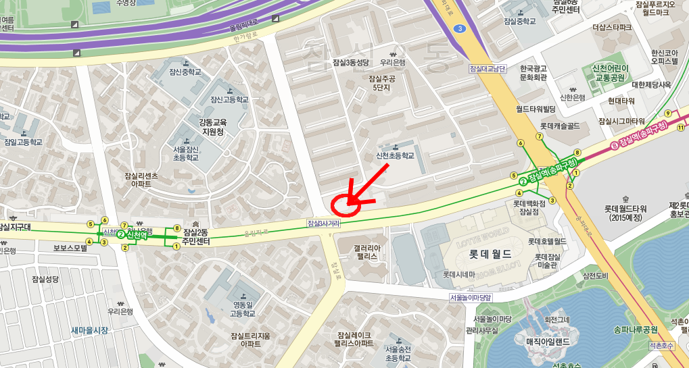

찾아오시는 길
주소 : 서울시 송파구 잠실동 27-6 잠실중앙상가 307호
전화번호: 02) 423-7272
지하철 : 2호선 8호선 잠실역 5번 출구, 신천역 8번 출구 도보 5분 거리
주차 : 잠실중앙상가 지상주차장 진료시간동안 무료주차
버스노선:
파랑버스 : 301, 341, 342, 360, 362, 730
초록버스 : 2415,3313,3314,3315,3317,3411,3412,3414,4318,4319
공항버스 : 6000, 6006
